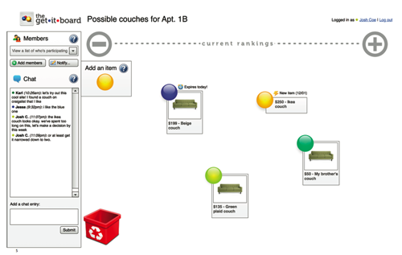
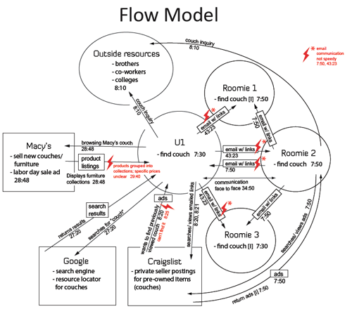
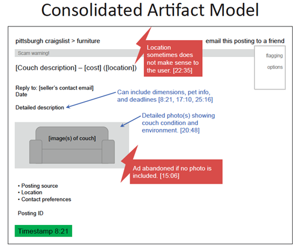
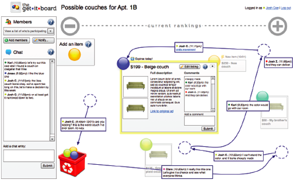
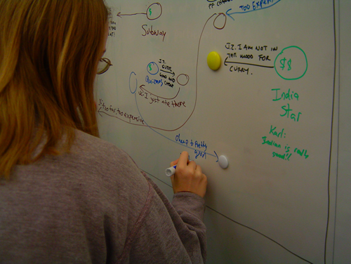

Apply Contextual Design methods to redesign a collaborative shopping system for small groups.
Using Contextual Inquiry, Heuristic Evaluation, Keystroke-Level Modelling, Cognitive Walkthrough, and Think Aloud, my team designed a system to enable collaborative shopping on the web.
We spent a lot of time analyzing existing systems, such as Craigslist, and why they don't support the task of collaborative shopping effectively.
We brainstormed many ideas and metaphors that could give us a different perspective on shopping together. My one requirement was that our system had to be better than a pad of paper to pass notes with. I think we succeeded.
Our final design was inspired by a talk with our professor John Zimmerman, who turned us away from a mechanical voting-type system and asked us to consider the human needs of our users, such as bonding and joking around. The design acts as a virtual whiteboard where groupmembers can add and move items around to show preference and write comments to have natural discussions (and witty banter) about the decision.
Even before we were done, we knew we had a winner when we had a blast using the prototype system to make a group decision on where to go for lunch. We got an A+.